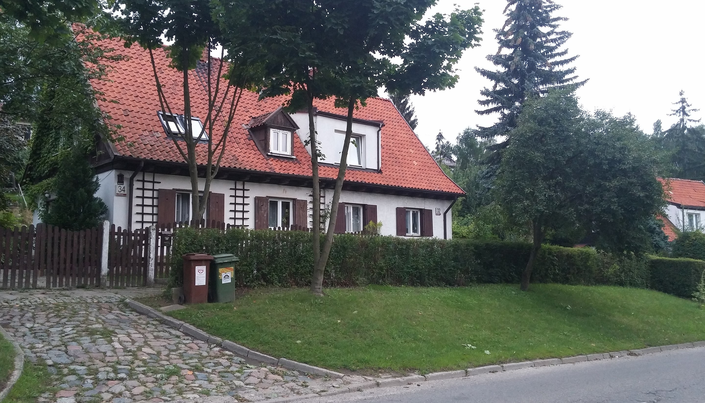

Diabełkowo
Witaj w Diabełkowie

Artyści związani z Diabełkowem

Ś.p. Czesław Gajda

Ś.p. Marian Matocha

Ś.p. Aleksandra Radziszewska

Paweł Tyzo
Mieczysław Olszewski "Mieto"
Wojciech Mokwiński
Giedymin Jabłoński
Jacek Osadowski